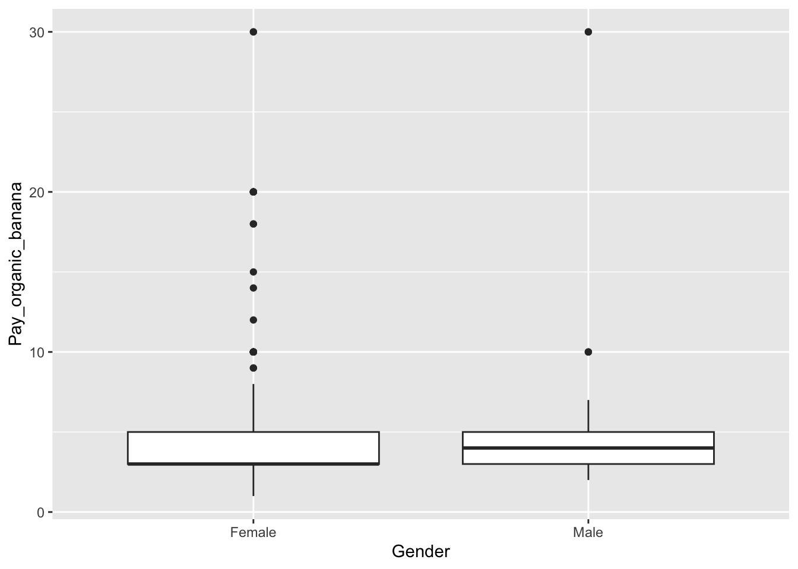

Chapter 11 Consumer segmentation
The data used in the first part of this chapter is from the paper: Verbeke, Wim, Federico JA Pérez-Cueto, and Klaus G. Grunert. “To eat or not to eat pork, how frequently and how varied? Insights from the quantitative Q-PorkChains consumer survey in four European countries.” Meat science 88.4 (2011): 619-626. and can be found in the data4consumerscience-package as pork.
library(data4consumerscience)
data(pork)11.1 Segmentation
To create the consumer segments, a cluster analysis, based on behavioral data (frequency and variety of consumption), will be carried out.
This example shows k-means clustering as the clustering analysis, but there are many more options out there - some more data-driven and some using common sense or domain knowledge. Both types of segmentation can be valid, as long as the scientific reasoning behind makes sense.
11.1.1 K-means
K-means is a popular algorithm used for clustering, which is a fancy word for grouping. This means, that we can group un-grouped data, if the different attributes create such groups.
The algorithm works by you selecting a value for “k,” which is the number of clusters/groups that the algorithm will attempt to group the data points into. Then, it randomly selects “k” points from the dataset as the initial centroids. These centroids represent the centers of each cluster.
Next, the algorithm iteratively assigns each data point to the nearest centroid based on the squared Euclidean distance between the point and the centroid (also known as the “Within Cluster Sum of Squares”(WCSS)). After all data points have been assigned, the centroid for each cluster is recalculated by taking the mean of all the points assigned to that cluster. This step updates the center of each cluster.
The algorithm repeats the previous two steps until the centroids no longer move or the maximum number of iterations is reached. The final result is a set of “k” clusters, where each data point belongs to the cluster with the closest centroid.
K-means in R is pretty simple - only one line of code is needed to perform the analysis, if the data are ready for analysis.
First, we set.seed. As k-means is an iterative algorithm, that starts in a random point, it matters where this point is. Usually, the only thing happening if the seed is changed, is that the order of the clusters change - but this can be annoying enough that you would want to avoid it! To ensure, that we get the same results every time we run the algorithm, we set the seed, and keep it that way throughout the analysis.
As a start, we only use two variables (specified in the code as “VarietyTotal” & “TotalPorkWeek”, from the dataset pork), as this is easy to interpret. Below is shown an example with both 2 and 3 clusters (“centers = _“).
The “nstart”-input specifies, that the clustering will start at 25 different random points, and selects the best. Doing this will help getting the same result every time, especially if data are less clustered by nature. For details on the algorithm type ?kmeans to get help.
Note, the set.seed(123) is only for reproducibility and hence only nice-to-know.
set.seed(123)
km.cluster3 <- kmeans(pork[, c("VarietyTotal", "TotalPorkWeek")], centers = 3,nstart = 25)
km.cluster2 <- kmeans(pork[, c("VarietyTotal", "TotalPorkWeek")], centers = 2,nstart = 25)First, we run a clustering with the function kmeans for the dataset pork. We will use the two variables “VarietyTotal” & “TotalPorkWeek” to calculate the three best clusters, and we will choose the random centers 25 times. You can off course change this number yourself. We save it as km.cluster3 (remember you choose this name). Secondly, we run almost the same clustering, changing only the name and the number of centers.
11.1.2 Initial characterization of clusters
Below are some of the outputs, that you can get from the clustering. Here you can see the size of the clusters as well as the positions of their centroids. Positions here means the value of the centroid for each variable. For example, below we see, that the cluster 1’s centriod has a value for VarietyTotal of 25.04562. Size means the number of members in each cluster.
Here for 2 clusters:
km.cluster2$centers## VarietyTotal TotalPorkWeek
## 1 25.04562 7.571986
## 2 27.28738 20.140544km.cluster2$size## [1] 1118 515… and for 3 clusters:
km.cluster3$centers## VarietyTotal TotalPorkWeek
## 1 22.85949 4.957372
## 2 27.26288 11.343699
## 3 27.10061 22.969634km.cluster3$size## [1] 548 757 328Centers will give you the average values for the variables “VarietyTotal” & “TotalPorkWeek” in the center of each of the three (in km.cluster3) clusters. Size will give you the the number of members per cluster. It is a good idea to check that the clusters are not too uneven in number of members. The third line above is just another way of asking for the size of the clusters in km.cluster3. All command are repeated for the km.cluster2; that is the cluster analysis with two clusters, you made and saved above.
11.1.3 Vizualization
It is, however, a lot easier to understand clustering, when it is visualized. Below is shown two different ways of plotting the clusters - one using the build-in plotting function, and one using the package ggplot2. ggplot2 maybe looks a bit more complicated, but has a lot of functions built into it, which means that it can be nice to learn!
Try to make the plot yourself, and try to see what happens if you change different inputs.
library(ggplot2)
#Basic R-plotting
plot(TotalPorkWeek ~ VarietyTotal, data = pork, col = km.cluster3[["cluster"]] + 1)
points(km.cluster3[["centers"]], pch = 20, cex = 1.3)
df <- data.frame(km.cluster3[["centers"]])
df2 <- data.frame(km.cluster2[["centers"]])
#ggplot 2
ggplot(data = pork, aes(x = VarietyTotal, y = TotalPorkWeek)) +
geom_point(aes(color = factor(km.cluster3$cluster))) +
guides(color = guide_legend('Cluster')) +
geom_point(data = df,
aes(x = VarietyTotal, y = TotalPorkWeek),
color = 'black',
size = 2) +
theme_linedraw()ggplot(data = pork, aes(x = VarietyTotal, y = TotalPorkWeek)) +
geom_point(aes(color = factor(km.cluster2$cluster))) +
guides(color = guide_legend('Cluster')) +
geom_point(data = df2,
aes(x = VarietyTotal, y = TotalPorkWeek),
color = 'black',
size = 2) +
theme_linedraw()11.1.4 Sums of Squares from the clustering
As mentioned in K-means, k-means set the clusters such that the between clusters (sort of differences between centers) are large while the distance within a cluster (from each sample to is cluster-center) is small.
R can also display these numbers, as shown below:
#Within Sum of Squares
km.cluster3$withinss## [1] 12534.737 9854.921 9293.210#Total Within Sum of Squares
km.cluster3$tot.withinss## [1] 31682.87#Between Sum of Squares
km.cluster3$betweenss## [1] 73532.8111.2 Selecting the number of clusters
Usually there is no given set of clusters, so we want to also learn that from data.
Below we show how to use the Gap-statistics (from the cluster-package) for \(2\) up to \(10\) clusters to select the optimal number of clusters.
The concept of Gap statistics is based on the idea that if a dataset truly contains distinct clusters, then the dispersion within each cluster should be smaller than the dispersion between clusters. The gap statistic measures the difference between the observed dispersion and the expected dispersion under a null reference distribution. By comparing this gap statistic for different numbers of clusters, one can identify the optimal number of clusters that best captures the underlying structure of the data.
You don’t need to fully understand how it works, but you have to know how to interpret the plot, to be able to decide the number of clusters.
When interpreting the plot, the highest Gap-value (the y-axis) shows the number of clusters, that best represent the data. However, since we are trying to use the data to as a generalization of a larger population, one should be conservative when choosing the number of clusters. If a less complicated/more general model (less clusters) can explain almost the same, one should always choose the less complicated model.
As a rule of thumb, when interpreting the Gap-statistics plot, a model with a number of clusters within the standard deviation of the model with the best Gap-statistic will be sufficient. In our case, this means, that a model with 3 clusters should do the job, as seen below.
Another check is of course to make both models, and plot it, to check if the clustering makes sense. This is equally as important as looking at the Gap-statistics.
library(cluster)
gapStatistic <- clusGap(pork[, c("VarietyTotal", "TotalPorkWeek")], kmeans, 10)## Clustering k = 1,2,..., K.max (= 10): .. done
## Bootstrapping, b = 1,2,..., B (= 100) [one "." per sample]:
## .................................................. 50
## .................................................. 100plot(gapStatistic, main = "")
Another package able to aid when trying to determine the number of clusters is NbClust. This package runs a variety of different tests, each resulting in an optimal number of clusters. This means, that while you get a lot of opinion on the number of clusters, the NbClust-function might take a while to run.
NbClust will show a lot of plots and show results for the different methods. You can look at them if you want, but the most important part is the last output of the function, where the voting for the different number of clusters as well as the conclusion is displayed.
library(NbClust)
Nbclusters <- NbClust(pork[, c("VarietyTotal", "TotalPorkWeek")], method = 'kmeans' )
## *** : The Hubert index is a graphical method of determining the number of clusters.
## In the plot of Hubert index, we seek a significant knee that corresponds to a
## significant increase of the value of the measure i.e the significant peak in Hubert
## index second differences plot.
## ## *** : The D index is a graphical method of determining the number of clusters.
## In the plot of D index, we seek a significant knee (the significant peak in Dindex
## second differences plot) that corresponds to a significant increase of the value of
## the measure.
##
## *******************************************************************
## * Among all indices:
## * 10 proposed 2 as the best number of clusters
## * 3 proposed 3 as the best number of clusters
## * 6 proposed 4 as the best number of clusters
## * 1 proposed 10 as the best number of clusters
## * 2 proposed 11 as the best number of clusters
## * 2 proposed 13 as the best number of clusters
##
## ***** Conclusion *****
##
## * According to the majority rule, the best number of clusters is 2
##
##
## *******************************************************************The gap-statistics seems to suggest k=3, whereas NbClust suggests k=2-4, which shows how important it is, that you know your data enough to be able to make the right decision, such as number of clusters.
The rule of thumb is to use these data driven approaches together with interpretability of the resulting clusters, such that the solution is meaningful.
11.3 Segmentation - another example
The data plantbaseddiet constitute data from the following study, and can be found in the data4consumerscience-package:
Reipurth, Malou FS, Lasse Hørby, Charlotte G. Gregersen, Astrid Bonke, and Federico JA Perez Cueto. “Barriers and facilitators towards adopting a more plant-based diet in a sample of Danish consumers.” Food quality and preference 73 (2019): 288-292.
These we will use as a second example for cluster analysis.
library(data4consumerscience)
data(plantbaseddiet)11.3.1 Cluster analysis
In this example, 3 variables are included in the clustering: ‘a_meat’, ‘a_dairy’ and ‘a_eggs’. Otherwise, the same procedure applies: Finding the appropriate amount of clusters, and running the analysis.
library(cluster)
library(NbClust)
set.seed(123)
gapStatistic <- clusGap(plantbaseddiet[,c('a_meat', 'a_dairy','a_eggs')], kmeans, 10)## Clustering k = 1,2,..., K.max (= 10): .. done
## Bootstrapping, b = 1,2,..., B (= 100) [one "." per sample]:
## .................................................. 50
## .................................................. 100plot(gapStatistic, main = "")
NbClust(plantbaseddiet[,c('a_meat', 'a_dairy','a_eggs')],method = 'kmeans' )## *** : The Hubert index is a graphical method of determining the number of clusters.
## In the plot of Hubert index, we seek a significant knee that corresponds to a
## significant increase of the value of the measure i.e the significant peak in Hubert
## index second differences plot.
## ## *** : The D index is a graphical method of determining the number of clusters.
## In the plot of D index, we seek a significant knee (the significant peak in Dindex
## second differences plot) that corresponds to a significant increase of the value of
## the measure.
##
## *******************************************************************
## * Among all indices:
## * 4 proposed 2 as the best number of clusters
## * 2 proposed 3 as the best number of clusters
## * 8 proposed 4 as the best number of clusters
## * 1 proposed 5 as the best number of clusters
## * 1 proposed 8 as the best number of clusters
## * 2 proposed 11 as the best number of clusters
## * 1 proposed 12 as the best number of clusters
## * 3 proposed 14 as the best number of clusters
## * 1 proposed 15 as the best number of clusters
##
## ***** Conclusion *****
##
## * According to the majority rule, the best number of clusters is 4
##
##
## *******************************************************************## $All.index
## KL CH Hartigan CCC Scott Marriot TrCovW TraceW Friedman
## 2 0.9252 311.7057 182.2207 11.7654 1149.509 5.488072e+12 156679680 36862.471 11.1925
## 3 0.2586 308.0304 285.4003 11.7339 1675.645 3.953831e+12 44523036 26403.285 23.0223
## 4 7.1975 427.2404 49.5727 17.7814 2234.681 2.095967e+12 23640671 16280.364 32.8452
## 5 0.2894 366.7036 153.9497 15.1320 2442.315 2.089400e+12 19737933 14690.323 44.0329
## 6 3.2405 422.0525 22.2209 18.7139 2743.294 1.568391e+12 13180805 10988.593 41.3374
## 7 0.5040 371.7357 101.6624 20.5406 2812.700 1.836977e+12 12153549 10478.001 42.1340
## 8 343.2438 403.4580 36.9155 23.5175 3048.082 1.441522e+12 7337648 8564.420 52.5762
## 9 0.0135 385.4943 45.8019 23.0734 3216.600 1.266818e+12 6981343 7920.400 53.4843
## 10 0.1817 381.5523 111.5743 23.4753 3303.003 1.297204e+12 5401575 7193.119 66.8519
## 11 30.8298 438.3487 29.5864 27.7794 3782.521 5.559440e+11 4470955 5769.052 144.1779
## 12 0.0246 426.3833 -62.7616 27.6000 3845.865 5.768499e+11 3880497 5413.891 146.9496
## 13 1.1235 330.3733 115.2435 21.3517 3483.329 1.483823e+12 3995422 6291.346 70.9156
## 14 1.2601 391.2247 -42.0818 26.2890 3982.228 5.844825e+11 3332476 5006.375 167.8458
## 15 0.5880 325.4223 -67.2994 21.8516 3648.917 1.380450e+12 3227640 5525.390 80.6944
## Rubin Cindex DB Silhouette Duda Pseudot2 Beale Ratkowsky Ball
## 2 4.2926 0.2408 1.1390 0.4242 1.0316 -8.2299 -0.0519 0.3618 18431.2357
## 3 5.9930 0.2045 0.9780 0.4798 2.7601 -183.6544 -1.0807 0.3504 8801.0948
## 4 9.7194 0.1738 0.9088 0.5576 1.0816 -13.1957 -0.1265 0.3672 4070.0910
## 5 10.7714 0.1851 0.9134 0.5535 3.3473 -94.6685 -1.1827 0.3302 2938.0647
## 6 14.3999 0.2038 1.0512 0.4393 0.8229 26.2617 0.3635 0.3569 1831.4322
## 7 15.1016 0.1929 1.4036 0.3636 0.7647 26.4662 0.5160 0.3350 1496.8572
## 8 18.4759 0.1710 0.9051 0.4696 4.3917 -102.7154 -1.2963 0.3199 1070.5525
## 9 19.9782 0.1632 0.8835 0.4736 0.4539 56.5376 2.0113 0.3087 880.0444
## 10 21.9981 0.1723 0.8750 0.4953 0.8440 17.1893 0.3075 0.2916 719.3119
## 11 27.4283 0.1317 0.8836 0.4774 0.3838 85.0828 2.6823 0.2804 524.4593
## 12 29.2276 0.1266 0.8611 0.4921 0.7735 19.6242 0.4919 0.2693 451.1575
## 13 25.1512 0.2079 0.9648 0.4956 8.1807 -88.6539 -1.4476 0.2594 483.9497
## 14 31.6067 0.1428 0.9407 0.4541 9.9679 -42.2849 -1.4295 0.2512 357.5982
## 15 28.6378 0.1689 0.8187 0.5513 2.7370 -60.9257 -0.9604 0.2430 368.3593
## Ptbiserial Frey McClain Dunn Hubert SDindex Dindex SDbw
## 2 0.4744 -0.0609 0.5672 0.0472 0 0.5957 7.3721 0.7241
## 3 0.5864 0.0248 0.6604 0.2590 0 0.4208 6.1734 0.4075
## 4 0.6834 0.5076 0.6790 0.2997 0 0.4083 4.8901 0.3497
## 5 0.6826 2.6401 0.7024 0.3360 0 0.4447 4.5644 0.3380
## 6 0.5574 1.5315 1.1764 0.0583 0 0.6780 4.1481 0.2968
## 7 0.5127 0.2105 1.4380 0.0583 0 0.7699 3.9974 0.2660
## 8 0.5120 0.1956 1.4505 0.0729 0 0.6013 3.5977 0.2825
## 9 0.5118 -0.4712 1.4471 0.0729 0 0.6727 3.5194 0.2775
## 10 0.5259 0.4604 1.3555 0.1278 0 0.6765 3.3753 0.2292
## 11 0.4970 0.5527 1.4692 0.1166 0 0.6530 2.9324 0.2096
## 12 0.4885 -0.0373 1.5052 0.1166 0 0.6509 2.7838 0.1839
## 13 0.4734 -0.1262 1.6879 0.1650 0 0.7505 3.0000 0.1904
## 14 0.4918 -0.9123 1.4990 0.0639 0 0.8799 2.7325 0.1630
## 15 0.4587 -0.5293 1.7779 0.0714 0 0.9286 2.7439 0.1742
##
## $All.CriticalValues
## CritValue_Duda CritValue_PseudoT2 Fvalue_Beale
## 2 0.6409 150.7003 1.0000
## 3 0.6373 163.9017 1.0000
## 4 0.5210 160.8866 1.0000
## 5 0.5730 100.5973 1.0000
## 6 0.5873 85.7137 0.7794
## 7 0.5151 80.9573 0.6718
## 8 0.5247 120.4586 1.0000
## 9 0.4921 48.4998 0.1144
## 10 0.4551 111.3709 0.8199
## 11 0.4868 55.8698 0.0487
## 12 0.5301 59.4019 0.6883
## 13 0.3992 151.9816 1.0000
## 14 0.2298 157.5488 1.0000
## 15 0.0819 1075.4679 1.0000
##
## $Best.nc
## KL CH Hartigan CCC Scott Marriot TrCovW
## Number_clusters 8.0000 11.0000 4.0000 11.0000 4.0000 4.000000e+00 3
## Value_Index 343.2438 438.3487 235.8276 27.7794 559.0357 1.851296e+12 112156644
## TraceW Friedman Rubin Cindex DB Silhouette Duda PseudoT2
## Number_clusters 4.00 14.0000 14.0000 12.0000 15.0000 4.0000 2.0000 2.0000
## Value_Index 8532.88 96.9302 -9.4244 0.1266 0.8187 0.5576 1.0316 -8.2299
## Beale Ratkowsky Ball PtBiserial Frey McClain Dunn Hubert SDindex
## Number_clusters 2.0000 4.0000 3.000 4.0000 1 2.0000 5.000 0 4.0000
## Value_Index -0.0519 0.3672 9630.141 0.6834 NA 0.5672 0.336 0 0.4083
## Dindex SDbw
## Number_clusters 0 14.000
## Value_Index 0 0.163
##
## $Best.partition
## [1] 3 4 4 4 2 2 4 2 4 4 2 3 2 2 4 4 4 4 4 3 3 4 1 2 3 4 4 4 4 1 1 1 2 4 1 4 3 2 4 4 1 3
## [43] 4 2 3 2 2 4 4 2 2 4 2 4 2 3 1 4 4 4 4 4 3 2 3 1 1 3 2 4 2 4 1 4 2 2 1 4 4 1 4 4 4 4
## [85] 3 4 2 4 2 4 4 4 4 4 3 2 1 4 4 1 3 4 2 2 2 4 1 2 4 3 3 4 3 4 2 3 2 3 4 2 4 4 2 4 1 4
## [127] 4 4 4 2 1 1 2 4 4 1 2 4 4 2 2 3 4 2 2 4 4 2 4 1 4 2 3 4 4 1 4 3 2 4 4 3 4 4 3 2 2 2
## [169] 1 1 4 2 4 4 2 2 4 4 4 2 2 1 1 3 2 1 1 1 1 4 4 4 4 1 2 1 4 2 4 4 2 4 4 4 2 2 1 1 4 4
## [211] 4 2 4 4 2 4 1 4 4 4 1 3 1 2 4 1 1 1 4 4 2 1 4 4 3 2 4 4 4 4 2 2 1 4 1 1 4 4 4 4 3 2
## [253] 4 2 3 4 4 4 3 4 1 4 4 1 4 3 2 2 1 4 4 4 2 4 4 4 4 4 2 4 4 4 4 4 4 2 2 1 1 2 1 2 4 2
## [295] 2 4 1 2 1 2 4 1 4 1 2 2 3 3 4 1 2 2 4 4 4 2 4 2 1 4 4 4 4 4 2 3 4 4 4 2 3 4 2 3 2 2
## [337] 2 4 4 2 2 4 4 2 4 3 4 4 4 4 2 2 4 2 2 4 3 3 2 1 4 4 4 3 4 1 1 2 4 1 4 4 2 4 4 3 4 4
## [379] 4 2 4 4 2 4 2 3 4 1 4 4 1 4 3 4 4 4 4 3 4 1 3 4 2 1 4 4 4 4 2 2 1 3 4 2 4 4 2 2 4 1
## [421] 2 4 2 1 2 2 4 4 2 4 4 4 4 4 2 2 1 2 2 3 1 4 2 4 1 2 4 4 2 4 2 4 4 2 4 4 2 4 4 1 2 4res <- kmeans(plantbaseddiet[,c('a_meat', 'a_dairy','a_eggs')], centers = 4, nstart = 25)11.3.2 Plot the model using PCA
The thing is, that now that we are dealing with more than 2 dimensions, it can be harder to visualize, how well the clustering has worked. One way though, is to use Principal Component Analysis (PCA), as PCA aims to describe the most variance from the data as possible, in the fewest dimensions as possible. This means, that if indeed the clusters are a result of variation in the data, a PCA should show it.
For more information on PCA, see Introduction to PCA and multivariate data.
A PCA with the same data as the clustering is created (using the prcomp) and plotted (using ggbiplot)
library(ggbiplot)
set.seed(123)
PCAmdl <- prcomp(plantbaseddiet[,c('a_meat', 'a_dairy','a_eggs')], center = T, scale. = F)
ggbiplot(PCAmdl, groups = factor(res$cluster), ellipse = T)
11.3.3 Add to dataset
As the clustering is a characteristic for each sample, similar to age, gender, name,… we can simply add it to the dataset. Here the interpretation from above gives rise to some intuitive names. These can be used directly. Here is how to add it to the dataset:
#First, check the centriods, to see if they make sense.
res$centers## a_meat a_dairy a_eggs
## 1 4.688508 18.854839 3.601815
## 2 3.719886 5.167045 2.915909
## 3 19.150000 21.850000 7.678571
## 4 18.812500 5.729167 4.492188#Then matched the label names, according to the plot above.
plantbaseddiet$clusters <- factor(res$cluster,labels = c('High Meat','Low All','High Dairy','High All'))
#And here the plot, now with the right labels.
ggbiplot(PCAmdl, groups = plantbaseddiet$clusters, ellipse = T)
11.3.4 Comments
Try to investigate if the number of clusters using gab-statistics and extract between and within variances.
Plot the different versions using PCA.